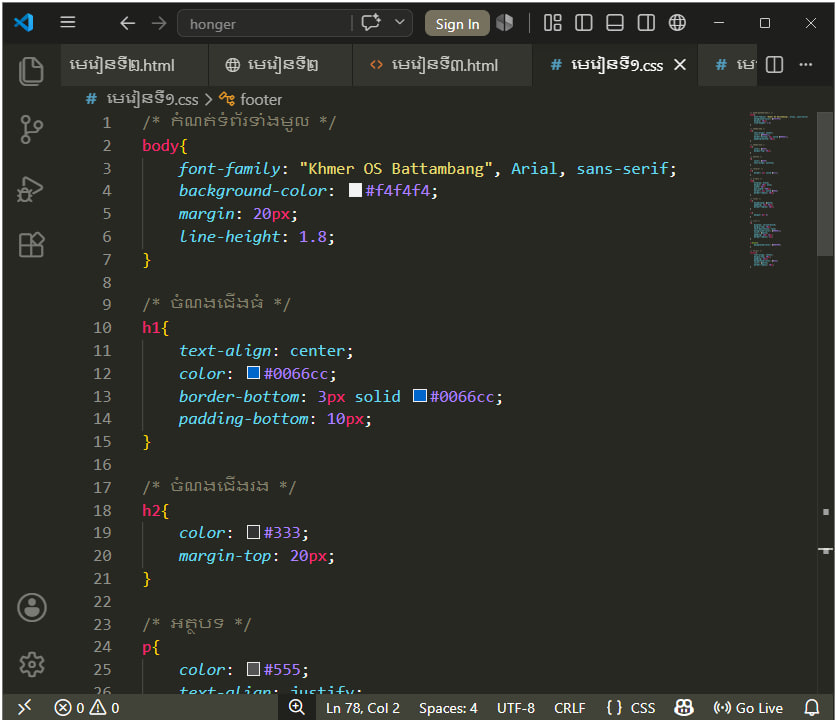

CSS (Cascading Style Sheets) គឺជាភាសាដែលប្រើសម្រាប់រចនាម៉ូត (Style) ឱ្យគេហទំព័រ ដូចជា ពណ៌ អក្សរ ទំហំ ចន្លោះ និង Layout។CSS (Cascading Style Sheets) គឺជាភាសាដែលប្រើសម្រាប់រចនា និងតុបតែងគេហទំព័រ (Website) ដែលបង្កើតដោយ HTML។
HTML មានតួនាទីបង្កើតរចនាសម្ព័ន្ធ (Structure) របស់ទំព័រ ចំណែក CSS មានតួនាទីកំណត់រូបរាង (Style) ដូចជា៖
code css

CSS ត្រូវបានប្រើដើម្បី៖